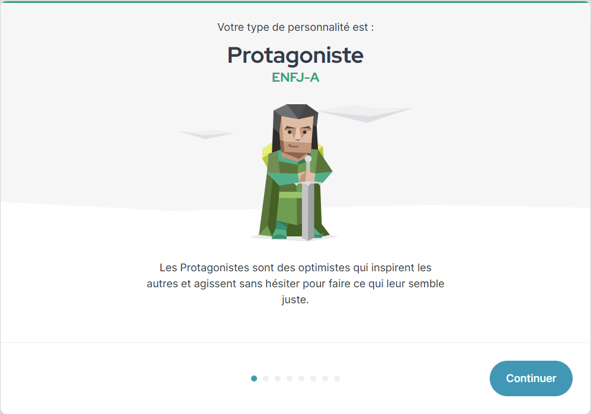
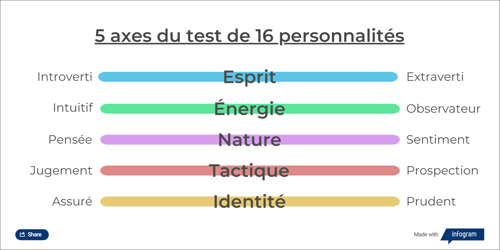
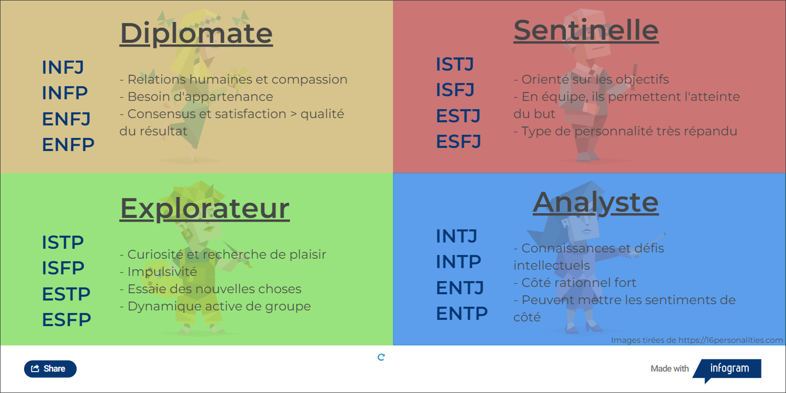

La personnalités et le travail d'équipe
Contenus de la page
1-3 Reconnaissance de ses caractéristiques personnelles
1-5 Stratégies de travail d'équipe
5-2 Caractéristiques personnelles dont les forces de caractères, les traits de personnalité et les comportements lors de travaux d'équipe
Temps requis
60 minutes
La personnalité
Qu'est-ce que la personnalité ?
La personnalité rend compte de ce qui caractérise les comportements usuels d’une personne, ce qui la distingue des autres et lui confère sa singularité.
(Rossier, n.d.)
On lie souvent le terme personnalité à individualité (alors que de traits communs à d'autres personnes la composent). La collection de traits de personnalités a un impact majeur sur notre façon de faire face aux obstacles et aux difficultés, de même que de définir la manière dont nous échangeons avec les autres.
Apprendre à connaître sa personnalité consciemment par un travail d'introspection nous aide à comprendre nos comportements et à définir des stratégies pour agir sur ceux-ci.
Un test de personnalité
Bien que de multiples tests existent, celui de 16 personalités a une bonne réputation. Il est axé sur certains déterminants de la personnalité de la théorie des cinq déterminants  .
.
Faites le test
Réalisez le test de 16 personalités avant d'aller plus loin, sans quoi vous risquez de fausser les résultats. En réalisant le test évitez d'inscrire trop de réponses neutres.
Notez à la fin les 5 lettres qui s'affichent à l'écran. Elles seront utiles pour la suite du cours. N'allez pas lire la description, nous en discuterons d'abord en groupe.


Les résultats du test


Vous avez un score avec 5 lettres, soit une lettre par axe. Selon si vous êtes à gauche ou à droite de l'axe, la lettre change. Le pourcentage associé (dans la vue détaillée) vous indique à quel point le trait est fort chez vous. Si vous avez beaucoup de réponses neutres, le nombre sera prêt de 50%. Plus le trait est fort, plus la valeur est proche des limites.
Les quatre premiers axes servent à déterminer le type de personnalité; le cinquième (identité) est lié à notre façon d'approcher les situations (souvent présenté comme la gestion du stress, mais sa définition est un peu plus complexe que ça). Comme il y a quatre axes, ayant chacun deux possibilités, on obtient un total de 16 types de personnalités. Elles sont groupées en quatre familles : diplomate, sentinelle, explorateur, analyste.


Ma personnalité et celles des autres
- À la lumière des résultats, est-ce que vous vous reconnaissez dans le type de personnalité obtenu ?
- Identifiez au moins deux situations ou activités dans lesquelles des marques de votre personnalité sont ressorties.
- Avec quels types de personnalités pouvez-vous le mieux vous entendre ?
- Avec quels types de personnalités êtes-vous susceptibles d'avoir des différends ?
Travail d'équipe
Testons d'abord les types de personnalités et les dynamiques d'équipe avec un court travail d'équipe : l'activité de survie dans le désert.
Survie dans le désert
Votre équipe et vous allez en voyage à Tahiti. En survolant le désert du Sahara, votre avion perd ses moteurs et ses deux ailes ! Juste avant que votre avion ne s'écrase, vous arrivez à vous échapper et à survivre. L'épave est dangereuse et vous avez un temps limité pour récupérer des articles afin de survivre dans le désert.
En équipe de 4 à 5, vous devez prioriser quels articles seront récupérés dans l'épave avant qu'ils ne soit détruits par les flammes. Les articles disponibles sont :
- 4L d'eau
- Air climatisé
- Boussole
- Briquet
- Carte du ciel
- Cellulaire
- Chandail chaud
- Chapeau à large bord
- Chips
- Couteau
- Lampe de poche
- Miroir
- Nourriture en conserve
- Sac poubelle
- Trousse de premiers soins
Vous avez 10 minutes pour dresser votre liste de priorité. Nommez un parte-parole qui présentera vos choix à la classe.
Retour sur le travail
- Comment s'est organisée votre équipe (rôles, prise de décision)
- Qu'est-ce qui a bien été dans votre équipe ?
- Qu'est-ce que n'a pas bien été dans votre équipe ?
Les caractéristiques d'une bonne équipe
Les caractéristiques d'une bonne équipe
Allez sur le site menti.com et rejoignez la salle, deux questions vous seront posées.
Quelques caractéristiques d'un bon membre d'une équipe
- Habileté à communiquer
- Fiabilité
- Enthousiasme
- Honnêteté
- Exprime de la reconnaissance
- Se mêle de ses affaires
- Participation active
On voit qu'être bon dans la matière du travail n'est pas un facteur déterminant dans les caractéristiques d'un bon membre d'équipe.
Quelques trucs pour les travaux d'informatique
- Vous n'êtes pas votre code : n'attendez pas pour partager votre code qu'il soit parfait et demandez de la critique. Être responsable d'un bogue qui retarde tout le monde par orgueil n'aidera pas votre travail.
- Échanger des idées sur les façons de faire : les algorithmes deviennent vite complexes. Discuter des difficultés avant de vous lancer dans le code.
- Planifier le travail à réaliser ensemble et rendez compte de votre avancement fréquemment.
- Planifier les attentes envers le travail d'équipe et les membres de l'équipe
- Établissez des conventions (noms de variables, classes, commentaires) et tenez-vous-y. Comprendre le code de quelqu'un d'autre est déjà complexe, si les conventions changent au cours du travail vous ne parviendrez pas à faire un code compréhensible. (Et si la personne enseignante ne comprend pas ce que vous faites, vous allez avoir une surprise en voyant la note...)
- Critiquez : aider les autres à s'améliorer plutôt que de faire à leur place pour avoir une bonne note. Les autres ne sont pas leur code. Évitez de critiquer la personne, limitez-vous au travail.
La résolution des différends dans un travail d'équipe
De petits différends ou conflit vont survenir dans des travaux d'équipe. À la base d’un différend l'on retrouve un ou plusieurs des éléments suivants :
Intérêts divergents-
Chaque personne conçoit le projet ou la situation selon ses propres buts et perceptions et tente d’influence la situation en ce sens. Lorsque deux de ces buts sont contradictoires, un différend peut apparaître et ce différend peut se résoudre ou évoluer en un conflit.
Carl souhaite terminer le projet de Programmation 1 en une soirée, quitte à avoir seulement 65 %, car il doit aussi finir le projet de Design Web. Alice pour sa part souhaite passer plus de temps sur le projet pour aller chercher une note maximale, car elle a terminé son projet de Design Web. Carl et Alice n’ont pas les mêmes intérêts : Carl cherche à passer le plus de cours possible, Alice cherche à obtenir les meilleurs résultats possibles.
Sentiments heurtés-
La façon dont on s’exprime peut heurter les autres, car certains propos évoquent une réalité ou un vécu qui est propre à la personne. Il faut conserver à l’esprit que si l’on a heurté quelqu’un, cela peut arriver, généralement une simple clarification des propos permet de lever le quiproquo. Si l’on a été heurté, il y a de fortes chances que la personne ne l’ait pas fait volontairement, il faut le garder à l’esprit et exprimer clairement ce que l’on a ressenti, sans chercher à rejeter la faute sur l’autre.
Alice, dans son argumentation, sous-entend que l’attitude de Carl n’est pas une bonne attitude pour accomplir quelque chose dans la vie. Certaines personnes dans la famille de Carl ont de la difficulté à faire quelque chose de leur vie. Depuis qu’il est tout jeune, Carl essaie fort de faire autrement, car il ne les voit pas comme de bons modèles. Même si Alice n’a pas insulté Carl, celui-ci est heurté par les propos d’Alice qui ne pouvait savoir.
Intention volontaire
Toutefois, lorsque l'attaque est volontaire (particulièrement dans le but de déstabiliser), il ne s'agit pas de comportement acceptable et la situation doit être traitée comme telle.
Besoins insatisfaits-
Parfois, ce n’est pas ce qui est dit, mais ce qui n’est pas dit qui génère des conflits, par exemple ne pas écouter l’opinion de l’autre ou accomplir une activité. Au-delà de l’aspect pratique des situations, les personnes ont plusieurs besoins et réagiront si l’un ou plusieurs d’eux demeurent non comblés. Il faut donc être attentif à l’expression de ces besoins chez les autres et les exprimer lorsqu’on les sent non comblés chez soi.
Après 20 minutes de discussions qui n’aboutissent pas, Emy entre dans le conflit, parce qu’elle est tannée de les entendre. Son opinion sur la façon d’accomplir le projet est totalement ignorée à la fois par Alice et Carl, trop occupé à s’obstiner entre eux. Emy pense avoir une idée pour dénouer la situation, mais elle n’a pas la place pour l’exprimer.
Valeurs bousculées-
au-delà de l’aspect des buts et de la façon de s’exprimer, nous sommes définis par un ensemble de valeurs (en lien avec notre personnalité). À l’occasion, des différends impliquant ses valeurs se manifesteront. Il peut s’agir d’opinions contraires, mais aussi de situations où il faut agir contre ses valeurs et, dans une tentative de diminuer le stress occasionné, l’esprit cherche une échappatoire et réagira fortement à des situations autrement anodines. Il faut apprendre à connaître ses valeurs et à reconnaître les situations qui les bousculent.
Finalement, l’équipe décide de mettre les bouchées doubles et Carl accepte de prendre une grande partie du travail de programmation pour permettre à l’équipe d’obtenir une bonne note. Cette décision déplait à Carl, car il ne pourra pas entraîner son petit frère au Hockey comme il l’avait promis. La famille est une valeur importante pour Carl et il préfère passer son temps à s’occuper de sa famille plutôt que d’aller chercher d’excellents résultats. Pour Alice, la réalisation de son plein potentiel est une de ses valeurs et accomplir un travail à une partie de la hauteur de ses capacités ne fait pas partie d’elle. Pour Émy, la collaboration et le respect est une valeur clé : elle préfère une situation harmonieuse à une situation couronnée de succès. Nos trois élèves ont de bonnes valeurs qui leur amènent tous une interprétation différente de la même situation.
Pourquoi créons-nous des conflits ?
Certaines situations permettent de mener à bien un travail, malgré la présence d'éléments possiblement conflictuels. Des situations ou des contextes peuvent amener toutefois ces éléments à être amplifiés ou simplement à ne pas prévenir leur manifestation, ce qui génère bien souvent un différend.
Mauvaise communication- Dans les éléments expliqués ci-haut, beaucoup proviennent de situations où l’on n’exprime pas ce que l’on ressent vraiment, on l’exprime avec les mauvais termes, on l’exprime au mauvais moment ou l’on n’écoute pas ce qui nous est exprimé avec l’intention de comprendre l’autre, mais plutôt l’intention de valoriser sa propre perception. Dans tous les cas, une communication nécessite deux parties et une mauvaise communication nécessite aussi l’action de deux parties. Dans le conflit précédent, ni Alice, ni Carl, ni Émy n’ont exprimé ce qui les dérangeait fondamentalement dans la situation. Ils sont tous limités à faire valoir des arguments rationnels : « avoir une bonne note ne change plus rien dès que tu as ton diplôme », « tout travail qui mérite d’être fait mérite d’être bien fait ». Aucun ne s’est arrêté pour se questionner sur la motivation et les raisons de l’autre.
Mauvaise structure de l’environnement/conditions- La bonne communication peut être favorisée par un bon environnement. Le contraire est aussi vrai. Deux personnes qui communiquent habituellement bien et qui se retrouvent dans un mauvais environnement ou de mauvaises conditions peuvent subitement se mettre à mal communiquer. Quand les conflits arrivent à outrance, il est important de se questionner sur les conditions entourant les communications. La rencontre n’étant pas modérée, une tierce personne ne pouvait mettre en pause les échanges le temps de laisser les esprits refroidir, ou fournir un éclairage sur des comportements à adopter.
Valeurs contradictoires- À la source du conflit de valeurs, se trouvent souvent deux personnes qui ont des valeurs différentes qui sont généralement en apparence contradictoire. Bien qu’il arrive que certaines personnes aient de mauvaises valeurs, ce sont souvent des interprétations différentes, mais tout aussi valables de la même situation. Comme mentionné plus haut, chaque personne impliquée dans le différend avait ses propres valeurs. Lorsque Alice parle avec sa famille des situations vécues à l’école, elle n’a pas exprimé sa valeur de performance ni est elle confrontée dans celle-ci, car les membres de sa famille la partagent. Donc leur regard sur la situation est le même qu’elle, chose qui ne se vérifie pas sur le terrain.
Comment régler un conflit
Une fois qu'on remarque qu'un conflit est en cours (ce n'est pas toujours facile d'en prendre conscience), diverses stratégies peuvent être utilisées pour adresser la situation dans le but de trouver un terrain d'entente. Pour cela les deux parties doivent être ouvertes à mettre en place la solution et à passer à autre chose. Une grande partie du succès d'une résolution de conflit dépend de la volonté de passer à autre chose.
Mettre des mots sur ce qui nous dérange- Identifier un comportement, une idée, une action qui nous dérange. C’est rarement l'identité de l’autre qui dérange, mais bien ses actions. Les personnes enseignantes, les gestionnaires et les juges ne jugent pas des personnes, mais des productions, des expériences, des compétences ou des actions commises. Pour espérer régler un conflit, il faut cibler quelque chose d’observable qui nous dérange. Mettre des mots sur les émotions impliquées. La différence entre une argumentation calme et un conflit est souvent que des émotions viennent se mêler de la partie. Une fois que l’on sait ce qui nous dérange (le quoi), il faut identifier comment cela nous dérange et pourquoi cela nous dérange. C’est à cette étape que l’on peut chercher dans son vécu ou ses valeurs ce qui nous amène à réagir comme ça.
Ne pas se victimiser-
Avec notre point de vue, on remarque rarement nos torts au premier coup d'œil. Bien qu’il puisse arriver d’être victime de harcèlement ou d’abus de pouvoir, la majorité des situations du quotidien ne tombent pas dans cette catégorie. Nous ne devenons pas impliqués dans un différend parce que l’autre partie veut nous faire du tort, mais souvent parce que le but qu’elle poursuit est simplement autre que le nôtre (meilleur ou pire, cela n’a pas d’importance dans le règlement du conflit).
Prendre le temps de calmer ses émotions Il est tout à fait normal de vivre des émotions à la suite d’un conflit (le contraire peut même être inquiétant). Il n’y a pas de mal inhérent à être en désaccord, en colère ou triste à la suite d’un conflit. Il faut être prudent par contre de ne pas agir sur coup de ces émotions ! Il faut vivre, accepter ces émotions et les calmer avant de continuer dans la recherche d’une solution. Essayer de nier les émotions vécues met la table pour une résurgence du conflit. Selon le point auquel le conflit nous affecte, un certain temps peut être nécessaire pour gérer cette étape.
Réfléchir aux problèmes connexes- Un conflit ne se développe pas de rien et est souvent l'expression de quelque chose de plus important. Prenez le temps de penser aux interactions précédentes et divergences précédentes pour trouver des points communs. Cela peut vous faire réaliser certains éléments importants dans la dynamique du conflit et identifier les sources pour régler le conflit à sa source.
Discuter avec les autres participants ou observateurs du conflit- Recueillir une seconde opinion peut aider à comprendre mieux les faits et les réactions d’autrui, car en étant dans le conflit notre observation peut être biaisée. Il faut faire attention de ne pas aller chercher une opinion de quelqu’un qui pense comme nous (se faire conforter dans notre position) et de ne pas se servir de cette personne simplement pour se défouler (communément appeler bitcher), car cela n’aidera pas la situation Établir une solution qui convient aux deux parties. Un conflit provient de deux personnes, les deux devront être en accord avec la solution afin de trouver une solution permanente à la situation. Si l’une des deux parties fait des concessions trop importantes, cette personne ne sera pas à l’aise avec la situation et le conflit risque de revenir. On parle souvent de « mettre de l’eau dans son vin », mais il faut quand même être satisfait de certains éléments du règlement. Même si ce n’est pas facile, il faut savoir dire non et parfois faire perdurer le conflit le temps d’arriver à un règlement satisfaisant. Vouloir régler trop rapidement peut simplement repousser dans l’avenir le conflit.
Références
Rossier, J. (n.d.). Personnalité. Encyclopædia Universalis. https://www.universalis.fr/encyclopedie/personnalite/